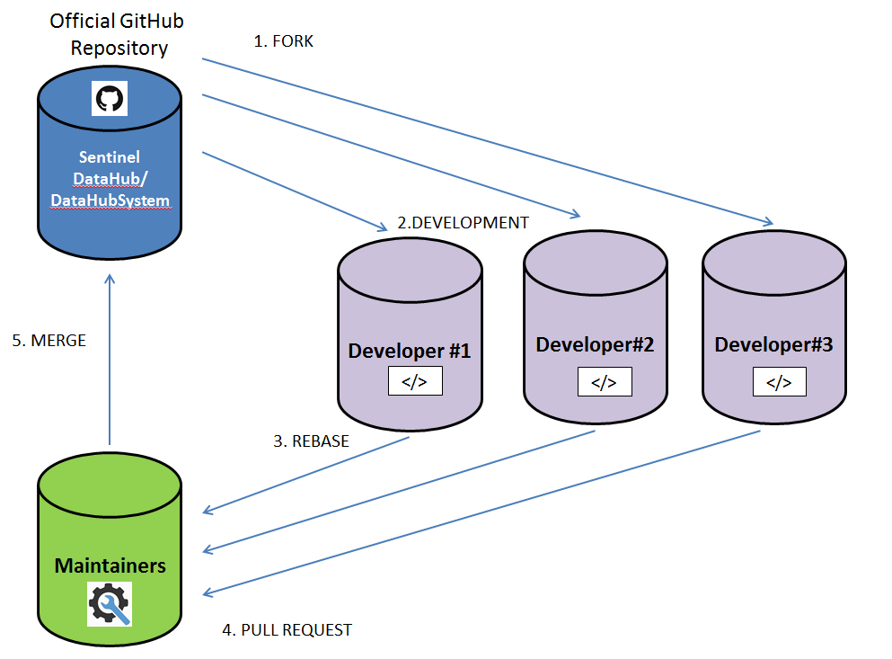

Developer Guidelines
This document provides detailed guidelines for the Open Source (OS) DHus Project contributors. The main sections are:
1. Contribution Process
You can contribute to the project, regardless of the skills, as there are many ways to contribute. For instance, you might be active on issue tracking system, or might supply patches. The various ways of contributing are described below. The GitHub issue tracking is the most appropriate place for asking for help when making the first contribution, reporting possible bugs, feature requests, documents changes and improvements. Submitting bug reports and suggesting new features are important tasks to help improve the quality and functionality of the software. You can help to ensure that current issues and features that have been reported and all relevant information is captured and entered into the issue tracking system in the correct way. This helps the project team and other contributors to take action in the shortest possible time. Open Source DHuS project uses GitHub to manage the bugs, as well as other issues and feature requests that we are working on.
2. Prerequisites
If you want to work with the source code or libraries of DHuS, we recommend you first make sure you have the following software installed:
• Java SE Development Kit (SDK)
3.Developer' Step
As developer you can contribute to the OSF DHuS project in the form of source code patches, new code, or bug reports, but could also include web site content like articles, FAQs, or screenshots. If the maintainers like your work, they might pull your fix into the original repository! If you want more details about the roles and related responsibilities see the Governance Model document. The figure below shows the major steps in a developer’s contribution process.
STEP 1: Git Install and Setup
STEP 2: Fork-Clone Project
a. A fork is a copy of a repository. Forking a repository allows you to experiment without affecting the original project.
• On GitHub, navigate to the SentinelDataHub/DataHubSystem repository.
•In the top-right corner of the page, click Fork.
In this way you have a fork on the DHuS repository, but you don’t have yet the files of the DHuS repository.
b. To get the files you must clone the project: On GitHub, navigate to your fork of the DHuS repository. In the right sidebar of your fork's repository page, click to copy the clone URL for your fork.
In a terminal:
$git clone https://github.com/SentinelDataHub/DataHubSystem.git
(You will be prompted for the passphrase previously inserted when the ssh key was generated).
Fork and clone are similar; they are related; they are not interchangeable.
•The clone operation is built into git: git-clone - clones a repository into a new directory.
•The fork operation lets anyone fork an existing repository and push changes to their personal fork without requiring access be granted to the source repository. The changes must then be pulled into the source repository by the project maintainers. This model reduces the amount of friction for new contributors and is popular with open source projects because it allows people to work independently without upfront coordination.
The difference between forking and cloning is really a difference in intent and purpose:
•The forked repository is mostly static. It exists in order to allow you to publish work for code review purposes. You don't do active development in your forked repository (in fact, you can't; because it doesn't exist on your computer, it exists on GitHub's server in the cloud).
•The cloned repository is your active repo. It is where you do all your work. But other people generally don't have access to your personal cloned repo, because it's on your laptop. So that's why you have the forked repo, so you can push changes to it for others to see and review.
Note: one thing that's sort of interesting is that you never directly update your forked repo from the original ("upstream") repo after the original "fork" operation. Subsequent to that, updates to your forked repo are indirect: you pull from upstream into your cloned repo, to bring it up to date, then (if you wish), you push those changes into your forked repo.
STEP 3: Development
You can modify the source code and add some nice features, fix a bug, and then push the changes in you fork, but take care about the mandatory rules and best practices summarized in the table below. The developments process includes the following steps:
STEP I: Identify the feature or the bug you are willing to implement
STEP II: Update the master branch of fork
$ git checkout branch_name
$ git fetch upstream branch_name
$ git merge --ff-only FETCH_HEAD
STEP III: Create a new branch for the issue following the naming convention.
There are 2 type of branches:
a. Feature Branch: this branch is dedicated for all features developments. This encapsulation makes it easy for multiple developers to work on a particular feature without disturbing the main codebase.
b. Hotfix Branch: this branch is dedicated for bug fixing.
STEP IV: Develop on the newly created branch (in general a new feature)
STEP V: Commit every atomic modify (add the id of GitHub issue at the end of the comment for each commit)
STEP VI: Pull request from issue branch via GitHub user interface
STEP VII: Interact with maintainer via GitHub pull request board
Mandatory Rules
| Building and unit tests should not depend on external services or network access |
|---|
| Write unit tests before coding, to verify bug and desired behaviour. (http://www.junit.org). |
| Ensure build is not broken before committing! |
| (If you have any doubts about or) If unsure about where to place code, contact the Maintainers to confirm whether your code needs a new module, and where it should go. |
| All source code must have the required file header with the Serco/Gael/(ESA) copyright (with the copyright year(s) updated) |
| Update the @Author tag on any class modified |
| Write JavaDoc for any methods that are public or which purpose can be tricky to understand. |
| All commit messages should have the relevant #GitHub issue number. If an issue does not exist, create it as a new issue or as a sub-task of the overall issue. |
Best Practices
| Building and unit tests should not depend on external services or network access |
|---|
| Add integration tests to a integration test module |
| Fix build issues immediately |
| Never copy code. If code could be reused, feel free to do a refactoring to a common class/module. Coordinate with other team members. If a special deployment or patch is needed, contact the Maintainers to add them to the DHuS repository |
| All source code committed to the main repository must be written by an author covered by the AGPL. |
STEP 4: Rebase
The golden rule of git rebase is to never use it on MASTER branch and on public branches. Before rebasing a fetch must be done to be sure that you have the updated version of the software. You can rebase the feature branch onto master branch using the following commands:a. Update a local branch from upstream repository
$ git checkout branch_name
$ git fetch upstream branch_name
$ git merge --ff-only FETCH_HEAD
b. Rebase the branch
$ git checkout
$ git rebase
c. Publish to your repository the rebase
$ git push -f origin branch_name
This moves the entire feature branch to begin on the tip of the master branch, effectively incorporating all of the new commits in master. But, instead of using a merge commit, rebasing re-writes the project history by creating brand new commits for each commit in the original branch. Running git rebase with the -i flag begins an interactive rebasing session. Instead of blindly moving all of the commits to the new base, interactive rebasing gives you the opportunity to alter individual commits in the process. This lets you clean up history by removing, splitting, and altering an existing series of commits. There are two trade-offs for this pristine commit history: safety and traceability. If you don’t follow the Golden Rule of Rebasing, re-writing project history can be potentially catastrophic for your collaboration workflow. And, less importantly, rebasing loses the context provided by a merge commit—you can’t see when upstream changes were incorporated into the feature. The major benefit of rebasing is that you get a much cleaner project history. First, it eliminates the unnecessary merge commits required by git merge. Second, rebasing also results in a perfectly linear project history—you can follow the tip of feature all the way to the beginning of the project without any forks. 5- Pull Request The changes must then be pulled into the source repository by the project maintainer. To have the project maintainers do so, a “pull request” must be issued by the developer. On GitHub navigate to your repository with the changes you want someone else to pull and press the Pull Request button. Note that pull requests can be sent from any branch or commit but it's recommended that a topic branch be used so that follow-up commits can be pushed to update the pull request if necessary.
4. Workflow
This workflow is a very common workflow with hub-based tools like GitHub, where it’s easy to fork a project and push your changes into your fork for everyone to see. One of the main advantages of this approach is that you can continue to work, and the maintainer of the main repository can pull in your changes at any time. Contributors don’t have to wait for the project to incorporate their changes – each party can work at their own pace. The figure below shows how it works.
5. GitHub issue System
In order to submit a bug, a document, a new feature or ask a question you can open a new issue in GitHub issue tracking. It is a great place to easily share and collaborate on your issues.
STEP 1 : Click on Issues on the right side;
STEP 2 : Click New Issue;
STEP 3 : Insert Title and one of the following labels:
•BUG:Software Problem Reports.
•DOCUMENTATION: Documentation is used to report issues on documents, and manuals.
•FEATURE: Feature is used for specific feature work or improvements.
•HELP: WANTED Help wanted is used to ask generic support.
STEP 4: Insert text description;
STEP 5: Submit new issue.
File Header text to be used
/* * Data HUb Service (DHuS) - For Space data distribution. * Copyright (C) 2013,2014,2015 European Space Agency (ESA) * Copyright (C) 2013,2014,2015 GAEL Systems * Copyright (C) 2013,2014,2015 Serco * * This file is part of DHuS software sources. * * This program is free software: you can redistribute it and/or modify * it under the terms of the GNU Affero General Public License as * published by the Free Software Foundation, either version 3 of the * License, or (at your option) any later version. * * This program is distributed in the hope that it will be useful, * but WITHOUT ANY WARRANTY; without even the implied warranty of * MERCHANTABILITY or FITNESS FOR A PARTICULAR PURPOSE. See the * GNU Affero General Public License for more details. * * You should have received a copy of the GNU Affero General Public License * along with this program. If not, see